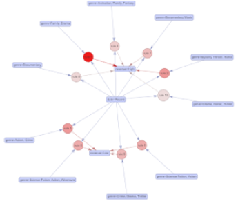
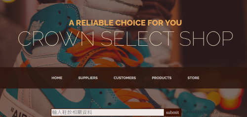
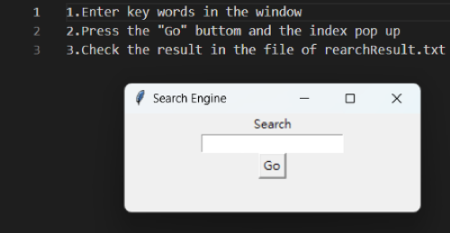

KUAN-RU HUANGBachelor of Information Management In National University of Kaohsiung | randy103104@gmail.com |
I am currently a Bachelor's student in National University of Kaohsiung studying in Information Management. My main research areas are NLP, Sentiment Detection and Data Mining. Also, I have strong interests in Computer Vision, Machine Learning and Artificial Intelligence. I have experiences of a Research Assistant in my current department in Data Mining and internship in Vidoe Coding, during my internship, our team published our findings in an ISO/IEC working group, MPEG-4, where I was the second author. Furthermore, my graduation project is about an emotion recording application, which contains the technologies of NLP and Sentiment Detection. Please feel free to contact with me if you had any question.
Huei-Jiun Yang, Kuan-Ru Huang, Sheng-Po Wang, Ching-Chieh Lin, Chun-Lung Lin (ITRI)
ISO/IEC JTC 1/SC 29/WG 4 m65098 October 2023, Hannover
This document presents a modification related to the temporal up-sampling mothed to simplify the interpolation procedure by skipping SSIM calculation and subsequent condition selection. This proposed method shows no substantial performance change in the average BD-rate under the All-Intra, Random Access, and Low Delay test conditions.
A brief description of the project. What problem does it solve? What technologies were used? Include links to the project repository or live demo.
A brief description of the project. What problem does it solve? What technologies were used? Include links to the project repository or live demo.
A management system for sneaker store. The user could manage its data about supplies, customers and products by manipulating this website. Furthermore, user could search for certain sneakers by inputing key words.
A search engine based on TF-IDF index of the given News data. In this project, I create a matrix of TF-IDF index for each word in the data, and show the search result orderly depending on input of key words.
